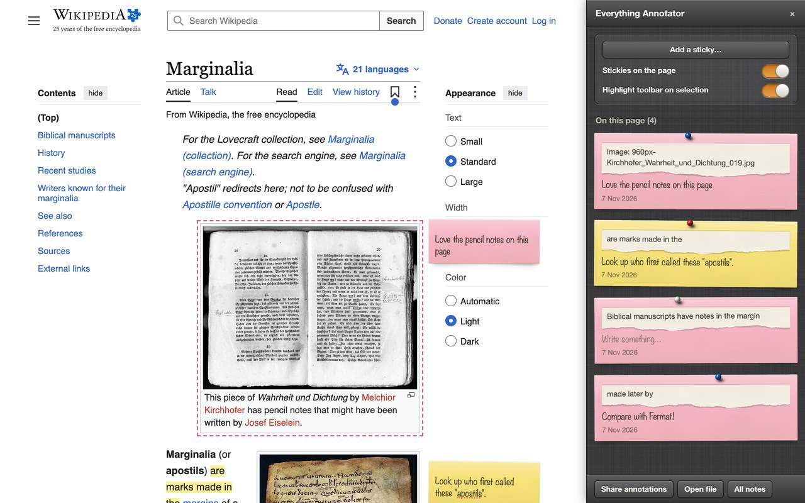
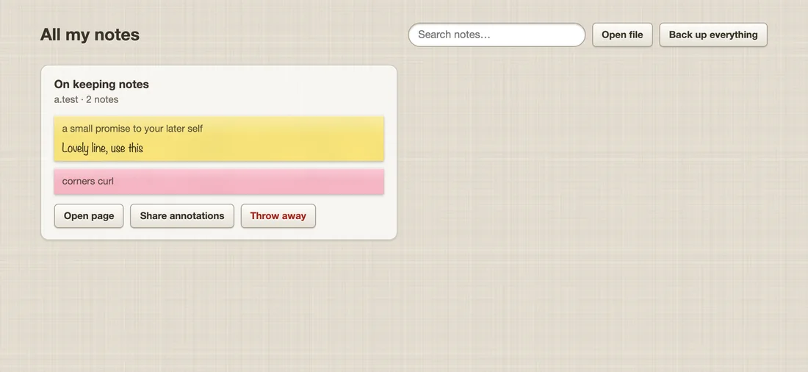

Stickies for any web page.
Highlight a sentence, pin a thought beside it, and find it waiting when you come back. Like annotating a PDF, but for the whole web.
For Firefox, Chrome and Edge. Your notes stay on your computer.
Notes that stay where you left them
Everything happens right on the page you're reading, and it all comes back the next time you visit.
Highlight
Select a word, a sentence or a whole passage, and pick one of five colours.
Stick a note on it
Add a sticky to any text, picture or part of a page. Keep it beside the page, or tidy them all into the sidebar.
Come back to it
Notes follow the text when a page changes.
If a passage disappears, its note waits in Came unstuck, ready to re-attach.
Share it
Send a page's notes as one small file. Anyone with the extension can open it and see them on the page.
A few more things
Small touches for people who read a lot on the web.


Install it
Free, with no account to create.
Firefox
Firefox 140 or later. Waiting for Mozilla's review, so the store page may not be live yet.
Get it from Firefox Add-ons- Click Add to Firefox on the store page.
- Allow it to run on websites, so your notes can appear on pages.
Chrome and Edge
Chrome or Edge 121 or later. Store listings are on their way.
Download version 0.4.1 · 320 KB- Unzip the file into a folder you'll keep.
- Open
chrome://extensionsoredge://extensions, and turn on Developer mode. - Choose Load unpacked, and pick the folder.
Your notes are yours.
No accounts, no tracking, and nothing sent anywhere. Notes leave your computer only when you share a file yourself.